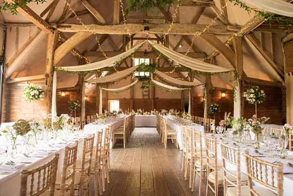
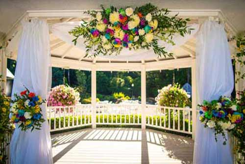

Wedding Venue
Welcome The Temple Inn & Suites. You can proudly invite guests from all over the world to the natural miracle of our locations. Temple Inn & Suites blends tall cedars, weeping willows and large room for dancing and other activities.
The Ultimate wedding Setting
The Temple Inn and & Suites offers a grande estate and royal service. We are a Private Event Facility situated on 5 acres. We schedule events year round.
Weddings are the single event that begins the rest of your life, so you want it to be incredibly wonderful, it’s a memory you’ll cherish forever. Temple Inn and & Suites is meant for you.
Temple Inn and & Suites is designed especially for weddings. It features a private brides room with comfortable furnishings and full length mirrors. The masculine grooms room also offers privacy for changing clothes and casual lounging. A knowledgeable event coordinator will work with you from the beginning of your relationship with us through the last hugs and good-byes.
During the warmer months, you may choose to marry outside at the Upper Gazebo. You’ll proceed through a pretty white pergola, covered in a sweetly scented wisteria, to the gazebo. Hanging baskets of flowers and beds of flowers adorn the gazebo.
At any time of the year, you may also exchange vows in the Terrace Room which can accommodate up to 250 guests seated. Your ceremony can be held under the arched ceiling.
Evenings at Temple Inn and & Suites are gorgeous year round. At night, the grounds twinkle with lights lining the bridges and outlining the roof. White landscape lights encircle the lakes and charming outdoor lamps light your way for a romantic nighttime stroll.
We encourage you to make your reservations as early as possible as dates fill up quickly. We recommend one year to six months in advance, particularly for a summer evening wedding. Watch your dreams come true!
Convenient Location
4800 Montgomery Ln #300Bethesda, MD 20814.

